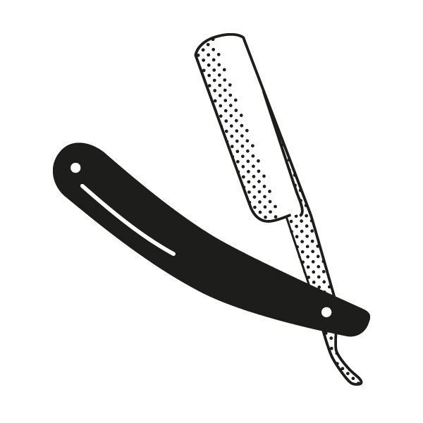

Point estimation
Statistical Inference - PhD EcoStatData
Homepage
 “Pluralitas non est ponenda sine necessitate.”
William of Ockham
This unit will cover the following topics:
- Bias-variance trade-off
- Cross-validation
- Information criteria
- Optimism
You may have seen these notions before…
…but it is worth discussing the details of these ideas once again.
They are indeed the foundations of statistical learning.
Yesterday’s data, tomorrow’s prediction
The MSE decreases as the number of parameter increases; similarly, the R^2 increases as a function of p. It can be proved that this always happens using ordinary least squares.
One might be tempted to let p as large as possible to make the model more flexible…
Taking this reasoning to the extreme would lead to the choice p = n, so that \text{MSE}_\text{train} = 0, \qquad R^2_\text{train} = 1, , i.e., a perfect fit. This procedure is called interpolation.
However, we are not interested in predicting yesterday data. Our goal is to predict tomorrow’s data, i.e. a new set of n = 30 points: (x_1, \tilde{y}_1), \dots, (x_n, \tilde{y}_n), using \hat{y}_i = f(x_i; \hat{\beta}), where \hat{\beta} is obtained using yesterday’s data.
Remark. Tomorrow’s r.v. \tilde{Y}_1,\dots, \tilde{Y}_n follow the same scheme as yesterday’s data.
Bias-variance trade-off
In many textbooks, including A&S, the starting point of the analysis is the reducible error, because it is the only one we can control and has a transparent interpretation.
The reducible error measures the discrepancy between the unknown function f(\bm{x}) and its estimate \hat{f}(\bm{x}) and therefore it is a natural measure of the goodness of fit.
What follows holds both for regression and classification problems.
Example: bias-variance in linear regression models
In regression problems the in-sample prediction error under squared loss is \begin{aligned} \text{ErrF} = \sigma^2 + \frac{1}{n}\sum_{i=1}^n\mathbb{E}\left[\hat{f}(\bm{x}_i) - f(\bm{x}_i)\right]^2 + \frac{1}{n}\sum_{i=1}^n\text{var}\{\hat{f}(\bm{x}_i)\}. \end{aligned}
In ordinary least squares the above quantity can be computed in closed form, since each element of the bias term equals \mathbb{E}\left[f(\bm{x}_i; \hat{\beta}) - f(\bm{x}_i)\right] = \bm{x}_i^T(\bm{X}^T\bm{X})^{-1}\bm{X}^T\bm{f} - f(\bm{x}_i). where \bm{f} = (f(\bm{x}_1),\dots,f(\bm{x}_n))^T. Note that if f(\bm{x}) = \bm{x}^T\beta, then the bias is zero.
Moreover, in ordinary least squares the variance term equals \frac{1}{n}\sum_{i=1}^n\text{var}\{f(\bm{x}_i; \hat{\beta})\} = \frac{\sigma^2}{n}\sum_{i=1}^n \bm{x}_i^T (\bm{X}^T\bm{X})^{-1}\bm{x}_i = \frac{\sigma^2}{n}\text{tr}(\bm{H}) = \sigma^2 \frac{p}{n}.
References
- Main references
- Chapter 3 of Azzalini, A. and Scarpa, B. (2011), Data Analysis and Data Mining, Oxford University Press.
- Chapter 7 of Hastie, T., Tibshirani, R. and Friedman, J. (2009), The Elements of Statistical Learning, Second Edition, Springer.
- Specialized references
- Rosset, S., and R. J. Tibshirani (2020). “From fixed-X to random-X regression: bias-variance decompositions, covariance penalties, and prediction error Estimation.” Journal of the American Statistical Association 115 (529): 138–51.
- Bates, S., Hastie, T., and R. Tibshirani (2023). “Cross-validation: what does it estimate and how well does it do it?” Journal of the American Statistical Association, in press.